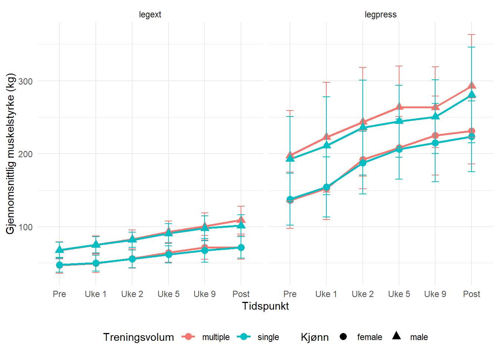

| Ekskludert | Inkludert | Ekskludert | Inkludert | |
|---|---|---|---|---|
| N | 4 | 18 | 3 | 16 |
| Alder | 22.9 (1.6) | 22.0 (1.3) | 24.3 (1.5) | 23.6 (4.1) |
| Vekt | 64.6 (9.7) | 64.4 (10.4) | 88.2 (22.4) | 75.8 (10.7) |
| Stature | 166 (8) | 168 (7) | 189 (5) | 183 (6) |
5 Assignment 5: Analyzing repeated measured experiments
6 Introduksjon
Treningsadaptasjon er en av de mest grunnleggende søylene i treningsvitenskapen, som sier at kroppen vår kan tilpasse seg den belastningen den utsettes for, gitt at den får nok tid til å tilpasse seg den nye belastningen ((bompa2019?), s. 8). Spesielt skjelettmuskulaturen har vist seg å være et høgts tilpasningsdyktig vev som kan endre sin egen arkitektur som respons på en gitt stimuli ((coffey2007?)). Resultatene på disse tilpasningene er påvirket av volumet, intensiteten og frekvensen av treningen, i tillegg vil tilpasningene avhengig av den spesifikke belastningen kroppen og muskulaturen utsettes for, for eksempel treningsmetode ((bompa2019?), s.3; (Raastad2010?), s.17; (coffey2007?); (izquierdo2004?)).
Styrketrening har vist seg å være avgjørende, ikke bare for idrettsprestasjoner ((washif2022?)), men også for folkehelse og redusert dødelighet ((ruiz2008?)). Denne treningsformen omfatter aktiviteter som utvikler eller opprettholder vår evne til å generer maksimal kraft eller dreiemoment ved en spesifikk hastighet ((Raastad2010?), s.17). Trening for maksimal muskelstyrke, der målet er å øke den høyeste kraften en muskel kan produsere (målt som en repetisjon maksimum) ((Raastad2010?), s.13), skiller seg fra trening med hensikt om muskelvekst (hypertrofi), hvor fokus ligger på å øke muskelens størrelse ((schoenfeld2016?)). Flere studier har undersøkt hvilket treningsvolum som best stimulerer slike tilpasninger og har identifisert et dose-respons-forhold, hvor økt treningsvolum er assosiert med større muskelvekst ((currier2023?); (schoenfeld2016?)). Et lignende forhold er også blitt observert for muskelstyrke ((ralston2017?)), selv om det er også foreslått at et høgt treningsvolum kan bremse utviklingen av maksimal muskelstyrke ((zhang2023?)). Muskelens tverrsnitt er en sentral faktor å ta med, da et større tverrsnitt vil gi et større potensiale for kraftutvikling ((Raastad2010?), s.20). Dette understreker behovet for videre undersøkelser av hvordan treningsvolum påvirker både muskelhypertrofi og styrkeutvikling, samt i hvilken grad endringer i muskelmasse er sammenfallende med økninger i styrke.
På bakgrunn av tidligere forskning og den noe usikre dose-respons-sammenhengen mellom optimal treningsvolum og muskeltilpasninger, er formålet med denne studien å undersøke hvordan ulike nivåer av treningsvolum påvirker både muskelvekst og muskelstyrke, ettersom skjelettmuskulaturen er svært tilpasningsdyktig på den stimulien den utsettes for. Ved å utforske denne sammenhengen håper man å kunne bidra med økt innsikt som kan være nyttig ved anbefalinger om optimalt treningsvolum.
7 Metode
7.1 Deltagere og studieoversikt
Totalt ble førti-en menn og kvinner inkludert i studien, der inklusjonskriterene var at de ikke var røykere og var mellom 18 og 40 år. Klare eksklusjonskriterer som redusert muskelstyrke grunnet tidligere eller nåværende skader, har hatt mer en en ukentlig styrketrenings økt de siste 12 månedene fra inklusjonsdato, intoleranse for lokal bedøvelse, samt bruk av medikamenter som kan påvirke treningsadaptasjoner. Syv deltakere ble ekskludert fra data analysen, fordi de ikke hadde gjennomført minimum 85% av de oppsatte treningene grunnet årsaker som: ubehag eller smerter i underekstremitetene under trening (n = 5), skade påført utenom studieprotokollen (n = 1), eller manglende overholdelse av studiedesignet (n = 1). Selv om ingen av de inkluderte deltakerne utførte mer en 1 ukentlig styrkeøkt, var det tjue deltakere som rapporterte at de var fysisk aktive ved inklusjon (median på 2 økter i uken, med en range på 0.5-4). Alle de inkluderte hadde tidligere treningserfaringer med ulike idretter, som for eksempel lagidretter, skiskytting etc…).
Verdiene er presentert som gjennomsnitt og standardavvik (SD).
Deltakerne gjennomgikk en treningsintervensjon med 12 uker styrketrening for hele kroppen i perioden september til november. For å muliggjøre for differensiereng av treningsvolum for hver deltaker, ble beinøvelsene utført unilateralt. Hver deltaker fikk tilfeldig utdelt enten ett sett eller tre sett til enten høgre eller venstre bein. Deltagerne utførte dermed begge volumprotokollene. Det ble gjennomført måling av maksimal styrke ved baseline, under (uke 3,5 og 9) og rett etter intervensjonen, mens muskeltverrsnitt ble målt før og etter, se Figure 7.1.
De ulike søylene illustrer treningsfrekvens per uke med en treningsintensitet lik x repetisjon maksimum (RM). De intensitetne som er markert med (*), referer til at en av de øktene den uken ble utført med 90% av 1RM. Sirkelsymbolet viser til når det ble utført målinger av muskeltversnitt med hjelp av fullkropps DXA og MR av kneekstensjons muskelen. X markerer de ulike styrkemålingene: før intervensjonen (n = 34), under (n = 18) og etter (n = 34). Den maksimale styrken før intervensjonen ble satt som den høgeste verdien deltagerne oppnådde under to ulike testsekvenser før intervensjonen startet.
7.2 Styrketreningsprotokoll
Det ble laget en standardisert oppvarming som deltakerne skulle gjennomføre før de begynte med styrketreningen. Oppvarmingen begynte med 5 minutter på ergometer sykkel, der de skulle holde 12-14 på gjennomgått grad av anstrengelse (RPE). Etter syklingen skulle de gjennomføre 10 repetisjoner av push-ups (tilpasset vanskelighetsgrad basert på vinkel), sit-ups, knebøy og rygghev, etterfulgt av et sett med 10 repetisjoner av hver styrkeøvelse med en motstand tilsvarende rundt 50% av deres repetisjons maksimum (1RM).
Styrketreningen inneholdt en del for beina og en for overkroppen. For beina skulle det gjennomføres unilateral beinpress, knefleksjon og knestrekk, i den nevnte rekkefølgen. Avhengig av gruppen deltakerne ble tildelt til, ble hver øvelse enten utført med ett sett eller tre sett. Beinet som ble tildelt ett-setts protokollen gjennomførte arbeidet sitt mellom det andre og tredje settet til benet som skulle gjennomføre tre sett. Pausene mellom settene skulle vare mellom 90-180 sekunder. Etter beinøvelsene hadde blitt fullført, skulle deltakerne gjøre to sett av bilateral benkpress, nedtrekk og enten skulderpress eller sittende roinger som ble gjort i hver sin økt. Som man kan se fra Figure 7.1, så ble treningsintensiteten gradvis økt fra 10RM to første ukene hadde 10RM, til 8RM de påfølgende tre ukene og 7RM de siste syv ukene. Etter den niende treningsøkten hadde hver uke som inneholdt tre økter i uken, en økt med lavere motstand, men der man beholdt samme antall repetisjoner (motstanden tilsvarte 90% av økten før). Øktene med maksimal innsats skulle ikke gjentas før det var gått 48 timer, mens det trengte kun å gå 24 timer mellom ny økt og øktene med redusert motstand. For å fasiletere til restitusjon, ble det gitt en standardisert drikk med 0.15 g kg\(^{-1}\) protein, 11.2g kg\(^{-1}\) karbohydrater og 0.5 g kg\(^{-1}\) fett, etter hver treningsøkt. For å sikre bærekraftighet av treningsprotokollen, ble det lagt opp til at noen av øktene kunne gjennomføres uten tilsyn. For å sikre progresjon og etterlevelse, ble deltakerne instruert til å føre deltaljerte loggbøker for de øktene som ble utført uten tilsyn, slik at forskerteamet kunne i samarbeid med deltakerne gå gjennom øktene.
7.3 Målinger av maksimal muskelstyrke og muskelens tverrsnittsareal
Deltakerne sin maksimale styrke ble satt som deres en repetisjon maksimum (1RM) i unilateral beinpress og knestrekk. Selve testen inneholdt en standardisert oppvarming med 10, 6 og 3 repetisjoner på henholdsvis 50,75 og 85% av deres antatte repetisjon maksimum. Etter dette, ble motstanden gradvis økt helt til deltagerne ikke mestret å løfte vekten gjennom hele bevegelsesbanen, for å finne deres 1RM. Hver deltaker fikk mellom fire og seks forsøk, der den høgeste vekten de mestret å løfte i hver øvelse, ble satt som 1RM. Ved baseline, ble 1RM målt to ganger med minst fire dager mellom hver måling, der den høyeste i hver test ble brukt i videre analyser. I tillegg til nye målinger etter endt intervensjon, gjennomførte en del av deltakerne (n = 18) styrkemålinger underveis i studien (i uke 2, 5 og 9). Det skulle ha gått minst 48 timer fra forrige treningsøkt før styrketest. De resterende som ikke utførte tester underveis, ble de ordinære treningsøktene prioritert ved sykdom eller tidsutfordringer som medførte at de gikk glipp av trening eller test.
Ved hjelp av magnetisk resonans bildefremstilling (MR), målte man deltagernes quadricep (vastus lateralis, medialis, intermedius og rectus femoris) muskeltverrsnittsareal. Dette ble gjort i henhold til produsentens protokoll (S-Scan, Esaote Europe B.V., Maastricht, Nederland), og personen som skulle analysere MR-bildene var blindet ved hjelp av OsiriX (v.5.6, Pixmeo Sarl, Bernex, Sveits). Målingen av muskeltverrsnittet både før og etter intervensjon, ble gjort på samme sted på låret, cirka midt på, med samme avstand fra kneleddet. Resultatet av målingen måtte inneholde minst fire påfølgende bilder med 5 mm tykkelse og 10mm avstand.
7.4 Data analyse og statistikk
Med mindre noe annet er spesifisert, er alle deskriptive data presentert som gjennomsnitt og standardavvik. Før studien ble det gjort en forhåndsberegning av utvalgsstørrelse, som viste at 40 deltakere ville være tilstrekkelig for å kunne oppdage forskjeller på omtrent 3 og 5 prosentpoeng for henholdsvis muskeltverrsnittsareal og maksimal styrke mellom de ulike volumforholdene, med en ønsket statistisk styrke på 80%. Denne beregningen er basert på data fra tidligere studier, som antar at forskjellene mellom volumforholdene tilsvarer en effektstørrelse på mellom 0,19 og 0,24 ((ralston2017?); (schoenfeld2016?)).
For å undersøke hvordan de ulike volumforholdene påvirket muskelvekst og styrke, ble det benyttet lineære blandede modeller (LLM). De relative endringene fra baseline ble satt som den avhengige variabelen, med antall sett som den uavhengige variabelen. For å vurdere om større muskelvekst også gir tilsvarende endringer i muskelstyrke, ble en interaksjonseffekt mellom treningsvolum og endring i muskeltverrsnitt inkludert. Ved å inkludere denne interaksjonseffekten kan modellen fange opp eventuelle forskjeller i effekten av muskelvekst på muskelstyrke under ulike treningsvolum. Baseline-verdier og kjønn ble brukt som kovariater for å kontrollere for deres potensielle effekt på muskelvekst og styrke.
For å evaluere om de statistiske modellene oppfylte forutsetningene for lineære blandede modeller, ble diagnostiske plot undersøkt. Q-Q plot ble brukt for å vurdere normaliteten til residualene, residualer mot predikerte verdier for å sjekke for homoskedastisitet, og histogram av residualer for å identifisere eventuelle skjevheter eller avvik.
Resultater med et signifikansnivå på \(\alpha = 0.05\) ble ansett som statistisk signifikante. Analysen av dataene ble gjort i R ((RCoreTeam2018?)).
8 Resultater
Under i Table 8.2, er det en oversikt over de sentrale parametrene for de tre LMM-ene som ble brukt i denne studien.
| Modell | Parameter | Estimert Koeffisient | Standard Feil | t-verdi | p-verdi |
|---|---|---|---|---|---|
| Model 1.1: Leg Extension | (Intercept) | 43.479 | 2.836 | 15.334 | 0.05* |
| Model 1.1: Leg Extension | timepost | 33.089 | 1.539 | 21.499 | 0.05* |
| Model 1.1: Leg Extension | timepost:setssingle | −4.278 | 2.188 | −1.956 | 0.0513 |
| Model 1.2: Leg Press | (Intercept) | 138.164 | 12.091 | 11.427 | 0.05* |
| Model 1.2: Leg Press | timepost | 95.326 | 4.158 | 22.926 | 0.05* |
| Model 1.2: Leg Press | timepost:setssingle | −8.541 | 5.865 | −1.456 | 0.1462 |
| Model 2: Muskel Tverrsnitt | (Intercept) | 7,126.800 | 254.701 | 27.981 | 0.05* |
| Model 2: Muskel Tverrsnitt | timepost | 289.876 | 55.046 | 5.266 | 0.05* |
| Model 2: Muskel Tverrsnitt | timepost:setssingle | −118.167 | 77.375 | −1.527 | 0.1294 |
8.1 Endring i muskelstyrke
Code
# Last inn dataene
library(exscidata)
library(tidyverse)
library(nlme)
data("dxadata")
# Filtrer datasettet for leg press-øvelsen og sett 'time' som en faktor med ønsket rekkefølge
strengthvolume_legpress <- strengthvolume %>%
filter(exercise == "legpress") %>%
mutate(time = factor(time, levels = c("pre", "session1", "week2", "week5", "week9", "post")))
# Modell for muskelstyrke i legpress-øvelsen uten manglende verdier
model_legpress <- lme(
fixed = load ~ time * sets + sex,
random = ~ 1 | participant,
data = strengthvolume_legpress, # Bruker det oppdaterte datasettet
na.action = na.omit
)
# Oppsummer modellresultatene
summary_modell_legpress <- summary(model_legpress)
# Hent ut estimatet og standardfeilen for 'post'
post_koeff_press <- summary_modell_legpress$tTable["timepost", "Value"]
post_se_press <- summary_modell_legpress$tTable["timepost", "Std.Error"]
# Beregn konfidensintervallet for post-estimatet
alpha <- 0.05
z_value <- qnorm(1 - alpha / 2)
lower_bound_press <- post_koeff_press - z_value * post_se_press
upper_bound_press <- post_koeff_press + z_value * post_se_press
konfidensintervall_post_press <- c(lower_bound_press, upper_bound_press)
# Hent ut estimatet og standardfeilen for interaksjonen mellom 'timepost' og 'setssingle'
interaksjon_koeff_press <- summary_modell_legpress$tTable["timepost:setssingle", "Value"]
interaksjon_se_press <- summary_modell_legpress$tTable["timepost:setssingle", "Std.Error"]
# Beregn konfidensintervallet for interaksjonsestimatet
lower_bound_interaksjon_press <- interaksjon_koeff_press - z_value * interaksjon_se_press
upper_bound_interaksjon_press <- interaksjon_koeff_press + z_value * interaksjon_se_press
konfidensintervall_interaksjon_press <- c(lower_bound_interaksjon_press, upper_bound_interaksjon_press)Generelt viser resultatene en økning i muskelstyrke for både leg press og leg extension for alle grupper, og at flere sett gir større økning i muskelstyrke (Table 8.3).For leg extension var den prosentvise økningen i muskelstyrke større for menn enn for kvinner, uavhengig av om de trente med ett eller flere sett. Kvinner som utførte flere sett økte gjennomsnittlig muskelstyrke med cirka 53 %, mens menn som utførte flere sett økte med omtrent 61 %. Tilsvarende var økningen for ett sett 50 % for kvinner og 49 % for menn.
For leg press var den prosentvise økningen også større for menn enn for kvinner, og forskjellene mellom treningsvolumene var tydeligere. Kvinner som trente med flere sett økte gjennomsnittlig muskelstyrke med omtrent 70 %, mens menn økte med omtrent 48 %. For ett sett var den prosentvise økningen for kvinner cirka 63 %, mens menn økte med omtrent 46 %.
| Exercise | Sex | Mean Load (kg) | Standard Deviation (kg) |
|---|---|---|---|
| post - multiple | |||
| Leg Extension | female | 71.45 | 16.32 |
| Leg Extension | male | 108.91 | 19.02 |
| Leg Press | female | 231.18 | 45.04 |
| Leg Press | male | 292.94 | 70.65 |
| post - single | |||
| Leg Extension | female | 71.32 | 14.82 |
| Leg Extension | male | 101.25 | 14.86 |
| Leg Press | female | 223.75 | 48.73 |
| Leg Press | male | 280.47 | 65.58 |
| pre - multiple | |||
| Leg Extension | female | 46.75 | 10.79 |
| Leg Extension | male | 67.50 | 11.76 |
| Leg Press | female | 136.00 | 38.72 |
| Leg Press | male | 197.37 | 61.62 |
| pre - single | |||
| Leg Extension | female | 47.50 | 9.97 |
| Leg Extension | male | 67.63 | 10.98 |
| Leg Press | female | 137.50 | 35.41 |
| Leg Press | male | 192.50 | 58.45 |
Gjennomsnittlig muskelstyrke økte over tid for begge øvelsene (Figure 8.2). Modellresultatene (lme-modellen) viser at økningen fra baseline (pre) til hver påfølgende tid (økt 1, uke 2, uke 5, uke 9 og post) var statistisk signifikant (p < 0.05). Når det gjelder endringene fra pre til post for de to øvelsene, ble det estimert at legpress økte med 33.09 kg (SE = 1.54 kg, 95% konfidensintervall (KI): [30.07, 36.11]). Mens med leg press, ble det estimert at muskelstyrken økte med 95.33 kg (SE 4.16 , 95% konfidensintervall (KI): [87.18, 103.48]).
Når vi ser på om volumforholdene (ett sett vs. flere sett) hadde noen effekt på muskelstyrken, viser konfidensintervallene for leg extension at forskjellen mellom ett sett og flere sett var mellom 30.07 kg og 36.11 kg. Tilsvarende var konfidensintervallet for leg press mellom 87.18 kg og 103.48 kg. Begge disse konfidensintervallene inkluderer null, noe som indikerer at det ikke var noen statistisk signifikant forskjell mellom ett sett og flere sett for endringen i muskelstyrke, verken for leg extension eller leg press. Dette tyder på at begge treningsvolumene hadde lignende effekt på muskelstyrken.

8.2 Endring i muskeltverssnitt
Resultatene viste en signifikant økning i muskelens tverrsnittsareal etter treningsperioden (Table 8.4). Den estimerte koeffisienten for post-testen var 289.88 g (SE = 55.05), med et 95 % konfidensintervall fra 181.99 til 397.76. Dette indikerer at deltakerne i gjennomsnitt økte muskelens tverrsnittsareal med 289,88 gram etter intervensjonen.
Analysen av effekten av treningsvolum på muskelens tverrsnittsareal viste at interaksjonen mellom tid og antall sett ikke var signifikant (estimat = -118.17, SE = 77.37, 95 % KI [-269.82, 33.48], p = 0,13). Dette indikerer at det ikke var en statistisk signifikant forskjell (p > 0,05) i økningen av muskelens tverrsnittsareal mellom deltakerne som utførte ett sett og de som utførte tre sett. Selv om estimatet var negativt, tyder det på at økt treningsvolum ikke nødvendigvis førte til en større økning i muskelens tverrsnittsareal i denne studien.
| Tidspunkt | Treningsvolum | Gjennomsnittlig muskeltverrsnitt (g) | Standardavvik (SD) |
|---|---|---|---|
| post | multiple | 9093.368 | 1297.290 |
| post | single | 8983.975 | 1219.944 |
| pre | multiple | 8835.974 | 1189.980 |
| pre | single | 8845.317 | 1175.207 |
9 Diskusjon
Denne studien undersøkte effekten av to ulike treningsvolum, ett sett versus tre sett, på muskelstyrke og muskeltverrsnittsareal. Resultatene viste en signifikant økning i både muskelstyrke og muskeltverrsnittsareal etter treningsperioden for begge gruppene. Imidlertid var det ingen statistisk signifikante forskjeller mellom gruppene som utførte ett sett og de som utførte tre sett, verken for muskelstyrke eller muskelhypertrofi. De diagnostiske analysene bekreftet at modellforutsetningene var rimelig oppfylt, noe som gir tillit til validiteten av funnene våre. Ingen betydelige avvik ble observert i residualene, og modellene ble derfor ansett som passende for dataene.
Disse funnene utfordrer den etablerte oppfatningen om at et høyere treningsvolum alltid fører til større muskeltilpasninger. Tidligere forskning har ofte indikert et dose-respons-forhold mellom treningsvolum og muskelvekst, hvor økt volum er assosiert med større hypertrofi og styrkeøkninger ((schoenfeld2016?); (currier2023?)). For eksempel fant Schoenfeld et al. (2016) at flere sett per øvelse var mer effektive for muskelhypertrofi enn ett sett. På den annen side har noen studier ikke funnet signifikante forskjeller mellom ulike treningsvolum, spesielt når treningsintensiteten er kontrollert ((ralston2017?)).
En mulig forklaring på våre funn er at begge treningsvolumene var tilstrekkelige for å fremkalle maksimale adaptasjoner innenfor den gitte treningsperioden. Det kan være en terskelverdi for hvor mye volum som er nødvendig for å stimulere muskelvekst og styrke, og at denne terskelen ble nådd med ett sett i vår studie. Dette er også sett i forskning som antyder at selv lave til moderate treningsvolumer kan være effektive for muskelhypertrofi hos utrente individer ((Krieger2010?); (Schoenfeld2019?)).
Når det gjelder muskelstyrke, viste begge gruppene betydelige forbedringer uten signifikante forskjeller mellom volumene. Dette kan skyldes at styrkeøkninger i stor grad påvirkes av nevromuskulære tilpasninger, spesielt i de tidlige stadiene av treningsintervensjoner ((Folland2007?)). Det er mulig at den relativt korte treningsperioden i vår studie ikke var tilstrekkelig for å avdekke forskjeller i styrkeøkninger basert på treningsvolum.
9.1 Begrensninger
Flere begrensninger bør tas i betraktning. For det første var utvalgsstørrelsen begrenset, noe som kan ha redusert studiens statistiske styrke til å oppdage mindre forskjeller mellom gruppene. Selv om forhåndsberegningen av utvalgsstørrelse indikerte tilstrekkelig kraft, kan individuelle variasjoner ha påvirket resultatene. For det andre var treningsperioden relativt kort, og lengre intervensjoner kan være nødvendig for å observere de fulle effektene av ulikt treningsvolum på muskelhypertrofi og styrke. I tillegg ble ikke faktorer som kosthold, søvn og daglige aktiviteter kontrollert, noe som kan ha påvirket muskeltilpasningene.
9.2 Implikasjoner for fremtidig forskning
Fremtidige studier bør vurdere å inkludere større og mer varierte utvalg, samt lengre treningsperioder, for å bedre forstå effekten av treningsvolum på muskeltilpasninger. Det kan også være verdifullt å undersøke hvordan ulike populasjoner, som erfarne idrettsutøvere versus nybegynnere, responderer på forskjellige treningsvolum. Videre bør fremtidig forskning ta hensyn til andre treningsvariabler som intensitet, frekvens og type øvelser for å gi en mer helhetlig forståelse av optimal treningsdesign.
9.3 Konklusjon
Resultatene fra denne studien indikerer at både ett sett og tre sett med styrketrening fører til signifikante økninger i muskelstyrke og muskeltverrsnittsareal hos voksne individer. Mangelen på signifikante forskjeller mellom de to treningsvolumene antyder at et lavere volum kan være like effektivt som et høyere volum for å fremme muskelstyrke og hypertrofi i en kortere treningsperiode. Disse funnene har praktiske implikasjoner for treningsprogrammering, spesielt for individer med begrenset tid til trening. Likevel er det behov for ytterligere forskning for å bekrefte disse resultatene og for å utforske de langsiktige effektene av treningsvolum på muskeltilpasninger.